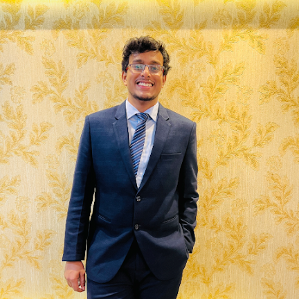

About Me
Hello, I'm Abdullah Al Muhit! I'm currently pursuing a Master of Engineering in Computer Science at Virginia Tech, specializing in Machine Learning, Data Analysis, and Software Engineering. With hands-on experience as an AI/ML Engineer and a portfolio of impactful projects, I'm dedicated to solving complex challenges and creating innovative solutions.
Beyond academics, I'm a passionate soccer player, chess enthusiast, and experienced leader. I believe in blending technical expertise with creativity to tackle real-world problems effectively.
Download My CV